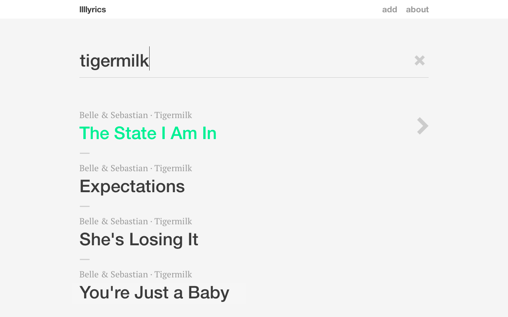
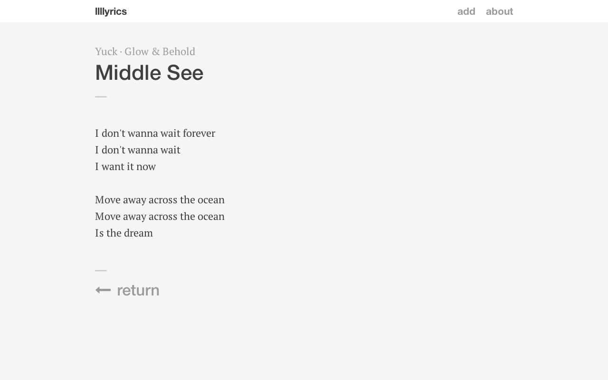
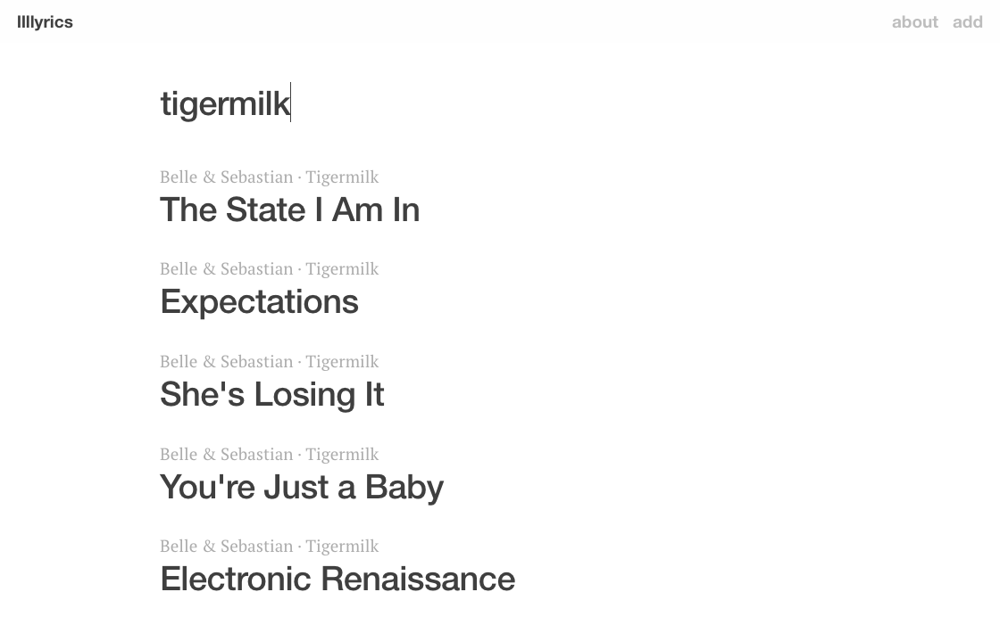
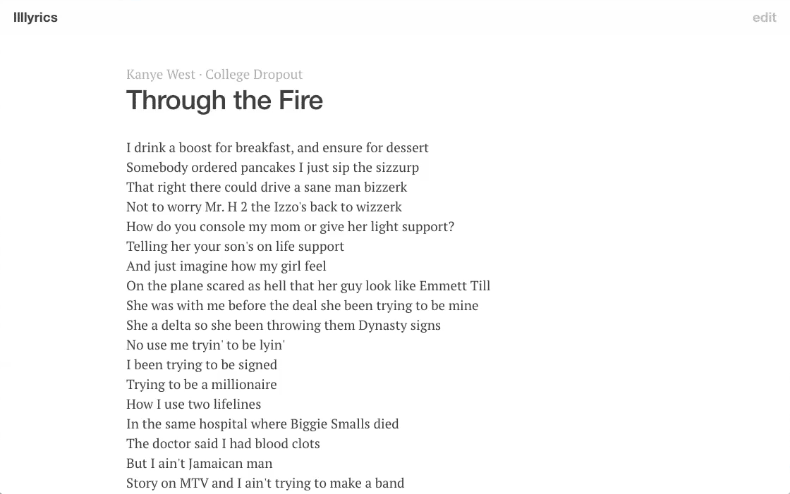

llllyrics
Lyrics websites are notoriously bad. Anyone who’s ever searched for lyrics online knows this. They’re always slow, full of ads and pop-ups, and look like they were made over a decade ago (most probably were). Worst of all, no care has been put into the typography of the actual lyrics—pretty awful when you consider that, well, they’re lyrics sites.
I wanted to build a better lyrics website—one that’s fast, easy to use, and values readability.
Early on, I had to decide where to get the lyrics content. I didn’t want to depend on a third party API; doing so, I’ve learned, leaves you at the whim of updates and changes—as they change, so must you. I wanted a more hands-off approach.
The solution? Crowdsource the lyrics. Anyone can add songs and make edits. This strategy required the least maintenance while also improving the accuracy of the lyrics.
Version 1: MVP (mid 2013)
For the minimum viable product (MVP), I focused only on the features that were absolutely necessary: discover, view, and add or edit a song. I used AngularJS as the development framework.
Discover. Visitors to lyrics sites are often one-off, spontaneously looking to find lyrics to a particular song they’ve just heard or are listening to at the moment. Given this, the interface was designed to be entirely search-focused. No browse latest or view popular. Right away, just type elements of the song you’re looking for into the huge search field in the middle of the screen.

View. On the view page especially, readability was a priority. This meant good typography (appropriate font choice, size, leading, and contrast) as well as providing the right context for viewing (a clean page that minimizes the visual weight of elements that can detract from the reading experience).
Add or edit. The edit page doesn’t look like a typical web form. Instead, it was made to look just like the view page. This way, when you see a mistake, you can quickly and seamlessly correct it, then go back to viewing the song.

Version 1.1: improvements (late 2013)
In the second iteration, I made the improvements that I found were most needed after getting feedback and having used the site myself pretty often.
Autocomplete. In first iteration, having to completely type in the artist and album name posed a barrier to adding songs. It also opened the door for having formatting or spelling differences for the same intended entry (e.g., both Belle & Sebastian and Belle and Sebastian). Autocomplete elegantly solved both of these problems.
Advanced search. Search functionality in the first version was admittedly limited. To address this, advanced operators were added. With these, you can restrict your search to a particular field or use quotes to find an exact phrase (for example, album:youth limits the query youth to album only and excludes matches to other fields). I favored this approach over, say, separate search inputs or checkboxes in order to keep the interface as simple as possible, at least on the surface. More functionality is there, for the experts who really want it.
Remember your previous search. Navigating back from the view page used to clear the search query that got you to that song. But what if you had chosen the wrong song or wanted to view other results from that query? Now, your previous search query and results are remembered when you navigate back, resulting in a dramatic improvement.
Version 2: remake (late 2014)
A year went by, and I had slowly been building up a list of ways the site could be improved. I finally got a chance to implement these changes towards the end of 2014.
Sticky header. Whereas in version 1 the controls—home, edit, save, cancel—are placed sporadically throughout the page, in version 2, they’ve been moved to the header, where they follow a consistent system: the home link is top-left and contextual actions are top-right. The header bar is affixed to the top of the page when you need it (when scrolling up or at the bottom of the page) and disappears when you don’t (when scrolling down).
Aesthetic refinements.
- Typography was refined: leading was tightened, letter-spacing of headlines was decreased, and font size was reduced across the board.
- Consolidation of colors: the bright green and blue accents were changed to periwinkle blue, and the background color of the page changed from light gray to white.
- Decorative elements, like icons, the search field underline, and section separators were eliminated, giving a much cleaner feel.


Loading indicator. In the previous version, there was no indication that the page was loading or querying the database. Just a blank page, which was confusing. Naturally, I decided to add a loading indicator.
Search query URLs. URLs make the web uniquely powerful—they allow you to bookmark a page or share it with someone. It was a shame, then, that in the last version, there was no dedicated URL for a particular set of search results. I fixed this in version 2 by rewriting the query portion of the URL as you type. So, the URL to view songs by the artist Radiohead is llllyrics.com/?q=artist:Radiohead. In effect, there’s now “browse” functionality, and at no extra cost.
Back-end refactor. By this time, AngularJS had gone some major upgrades and I decided to switch to the latest version to take advantage of all the features. Doing so required a lot of code refactoring and reorganization (in fact, everything was written again from scratch), but it was worth it to do things right. I also automated some development tasks with gulp. Browse the source code for more details.
Caching. Speed was one of the original tenets, yet I wasn’t happy with the performance. I improved speed in the newer iteration of llllyrics by using a cached version of the data most of the time, only refreshing the cache when a song has been added or updated.
As with other personal projects I’ve done in the past, llllyrics was motivated by a need. I saw something that could be better and decided to make it for myself. This drove me not only to build the website in the first place, but also to continue to iterate on it after the first version and again after the second.
The majority of the insights for improvement were gained from just regularly using the site. It’s for this reason I believe that to design a great product, you must use it yourself. At its best, it’s one you love to use.